Amanda Oliveira
Administração • Business Inteligence
• Front-End/UX • Automação
Administração • Business Inteligence
• Front-End/UX • Automação
EU ❤️ TECNOLOGIA
Sou Analista e Desenvolvedora de Sistemas por formação e bacharelanda em Administração, com expertise em
converter desafios corporativos em soluções digitais.
Principais competências:
🟣 Metodologias: Mapeio processos com BPMN/Fluxograma para identificar melhorias e aplico métodos como
Ciclo PDCA, Lean, Scrum, SWOT, 5W2H, SIPOC, GUT, Six Sigma entre outros.
🟣 Automação e Engenharia de Dados: Crio fluxos de automação (SQL, Python e Power Automate) para extração de
dados, tratamento e visualização de dados.
🟣 Data Visualization: Crio dashboards no Power BI com DAX, HTML e CSS para visualização estratégica e
intuitiva.
🟣 Reporting & Insights: Automatizo disparos de insights/relatório via e-mail para agilizar a tomada de
decisão.
🟣 Soluções Customizadas: Desenvolvo ferramentas de dados sob medida (Excel, Power BI ou Power Apps) para
suporte direto às áreas de negócio.
🟣 Idiomas: Inglês - A2 (básico/intermediário) e Espanhol - A2 (básico/intermediário).
Com sólida vivência em Governança, Performance, Business Intelligence e certificação Yellow Belt, meu
objetivo é promover a transformação digital nos setores em que sou alocada através da automação de atividades,
relatórios e fluxos de informação. Transformo processos e tarefas morosas em ágeis para obtermos dados e
informações para tomada de decisões inteligentes.
Outras informações sobre mim:
📍 Origem: Natural de Marília - SP.
🚗 Mobilidade: CNH Categorias A/B e veículo próprio.
✈️ Disponibilidade: Total flexibilidade para viagens e projetos externos.
🎯 Perfil: Profissional focada, sem dependências/vícios, sem filhos.
👩💻 Soft Skills: Comunicativa | Analítica | Humorada | Adaptável | Dinâmica | Ética | Colaborativa |
Trabalho em equipe | Pontual.

Uma ferramenta para priorizar problemas quando tudo parece urgente.
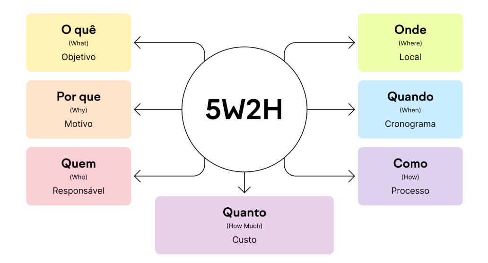
Um checklist prático para garantir que nenhuma tarefa fique com ponta solta.
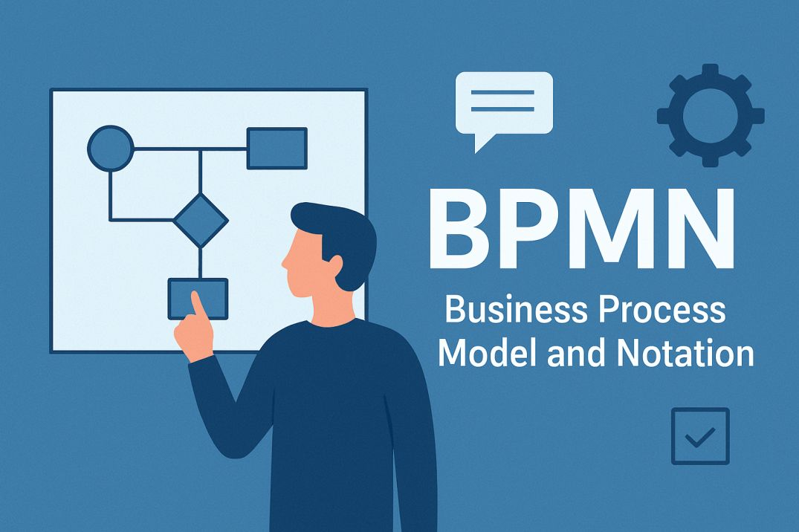
Uma forma visual (com blocos e setas) que mostra como o trabalho acontece hoje (ou deveria acontecer) dentro da empresa.
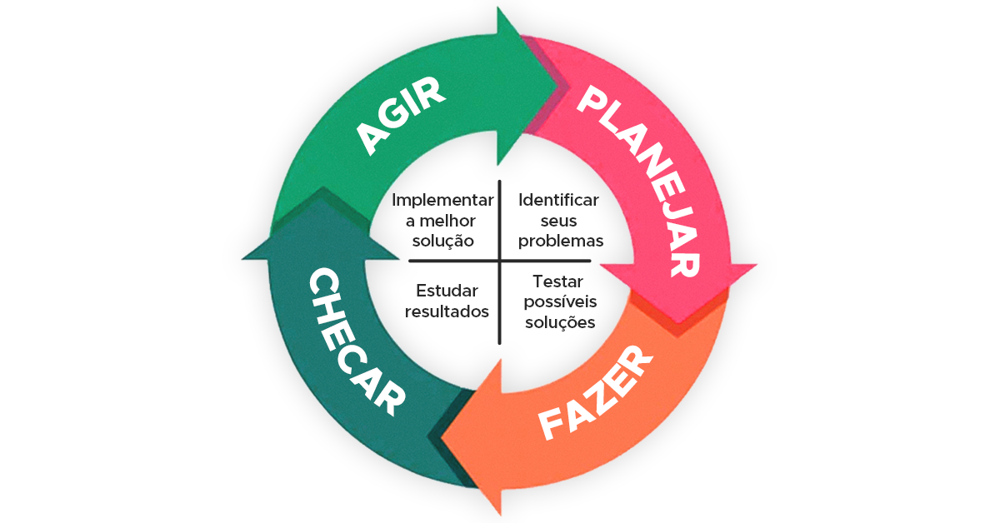
Um método circular para planejar, testar, avaliar e padronizar mudanças.
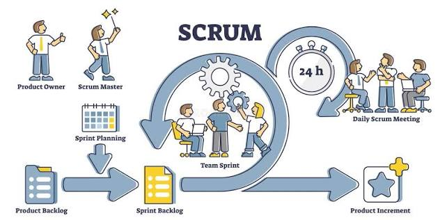
Uma forma de gerenciar projetos dividindo o trabalho em ciclos curtos e entregando partes funcionais com frequência.
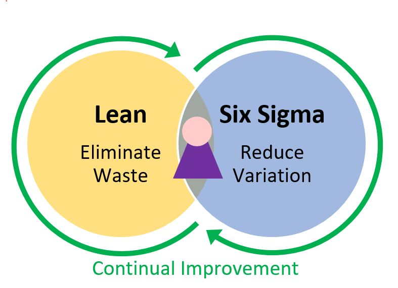
A união de duas filosofias para tornar a empresa mais enxuta e sem falhas;O Lean foca em eliminar desperdícios e Six Sigma foca em reduzir variações e erros.
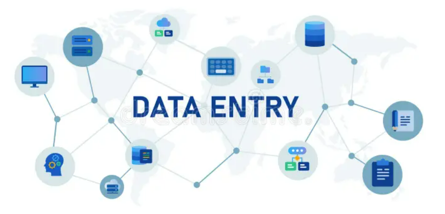
O código Python da extração varia de complexidade a depender da fonte de dados (SQL, HTML, CSV ou imagem) para transformarmos em planilha Excel.
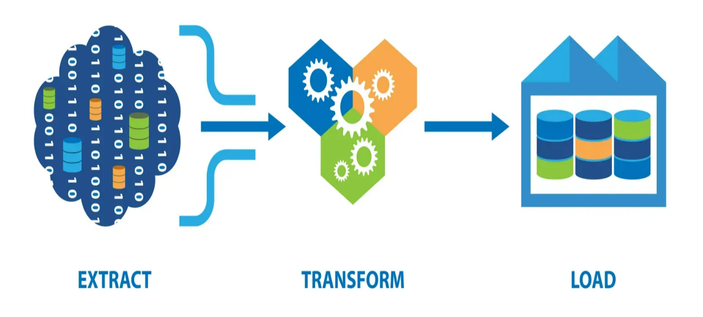
Movemos o(s) arquivo(s) gerado(s) para os caminhos respectivos através de códigos Python que disparam de forma automatizada ou através do Power Automate.
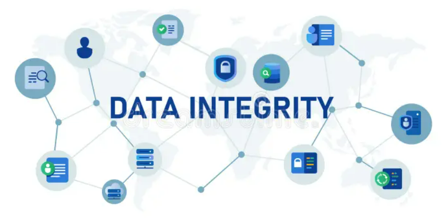
Caso necessário o tratamento de alguma informação ou adicionar dados que vem de outros arquivos, é possível e salvar a nova base de dados já renomeada.
OBS: Por razões de confidencialidade e acordos de sigilo, o código-fonte dos projetos desenvolvidos para empresas não pode ser compartilhado publicamente.
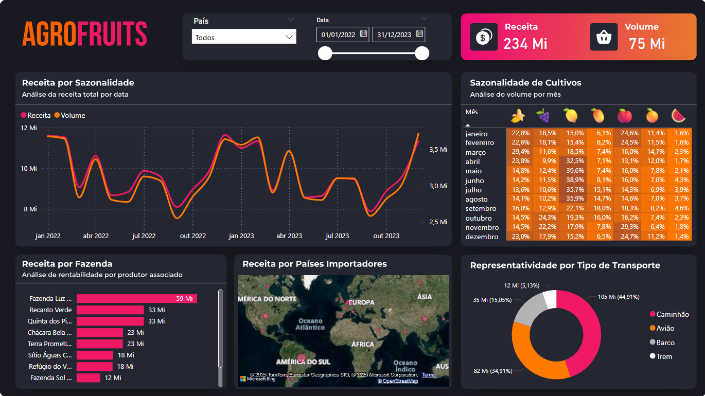
Dashboard construído no Power Bi para acompanhar as métricas de vendas de uma fazenda frutífera.
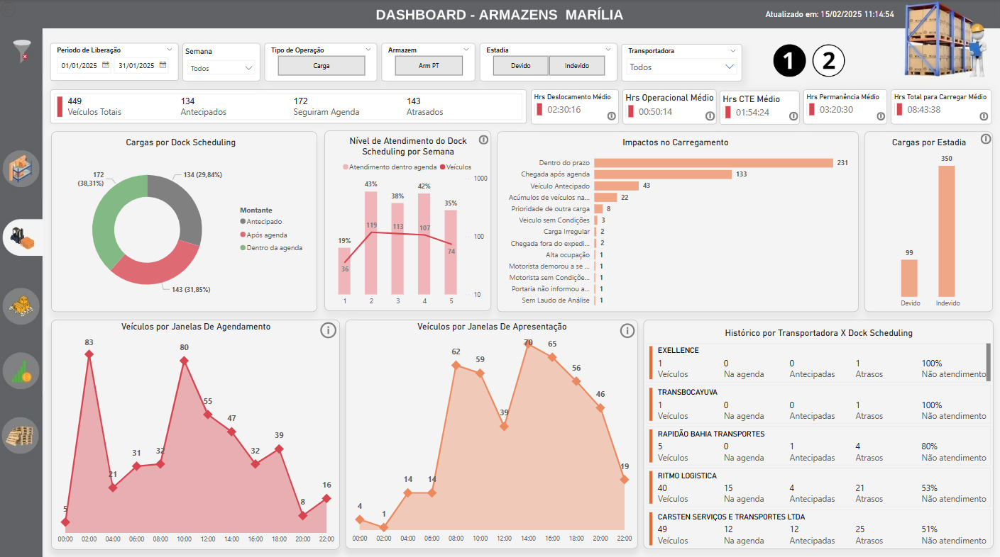
Dashboard construído no Power Bi para analisar e acompanhar a demanda de expedição logística de uma fábrica.
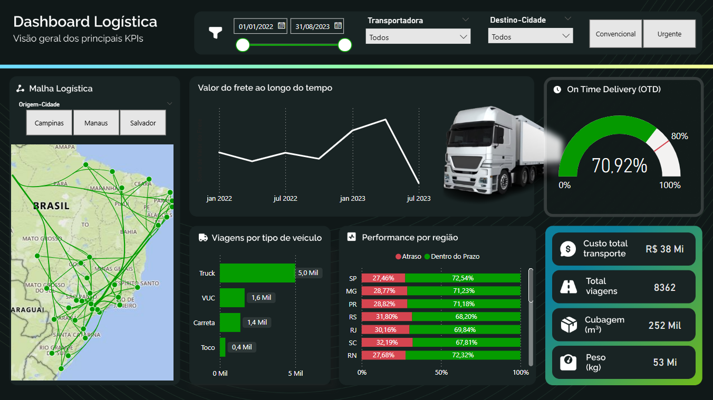
Dashboard construído no Power Bi para acompanhar a eficiência logística das entregas de uma transportadora.
OBS: Por razões de confidencialidade e acordos de sigilo, os dashboards desenvolvidos para empresas não pode ser compartilhado publicamente.
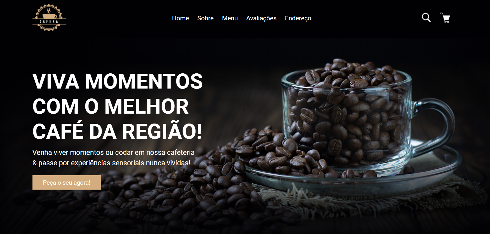
Site para uma cafeteria shop imaginária. Linguagens utilizadas foram HTML, CSS e JavaScript. Projeto à venda com possibilidade de personalizações!
Visualize aqui!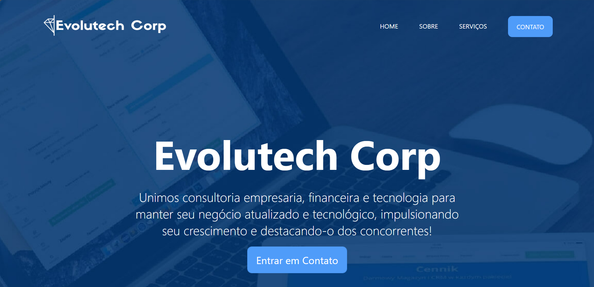
Site multi-pages responsivas para empresa fictícia! Linguagens utilizadas foram HTML, CSS e JavaScript. Projeto à venda com possibilidade de personalizações!
Visualize aqui!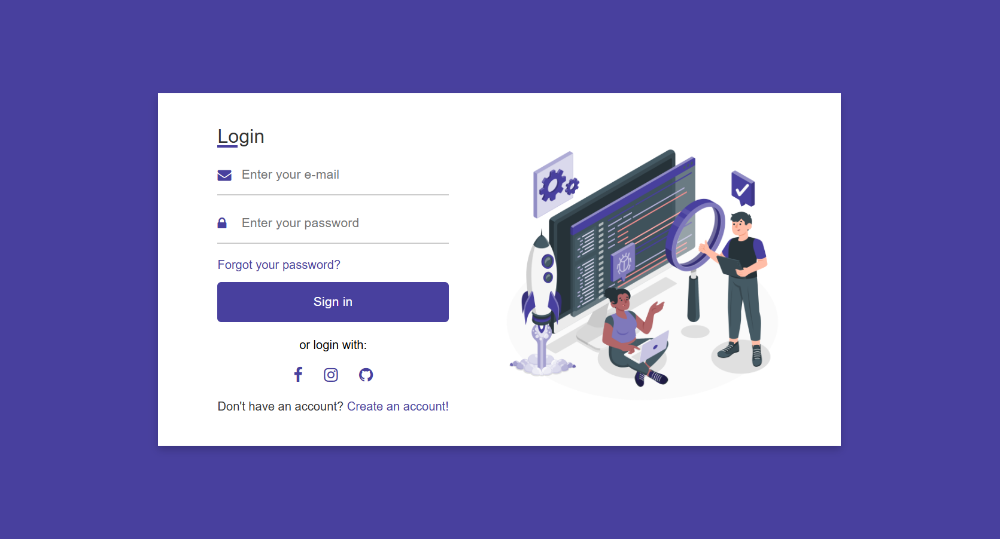
Site página de login responsiva! Linguagens utilizadas foram HTML e CSS. Projeto à venda com possibilidade de personalizações!
Visualize aqui!Playlist no Youtube onde compartilho meus conhecimentos sobre internet, tecnologia e programação para facilitar a vida de quem está começando agora!
Visualize aqui!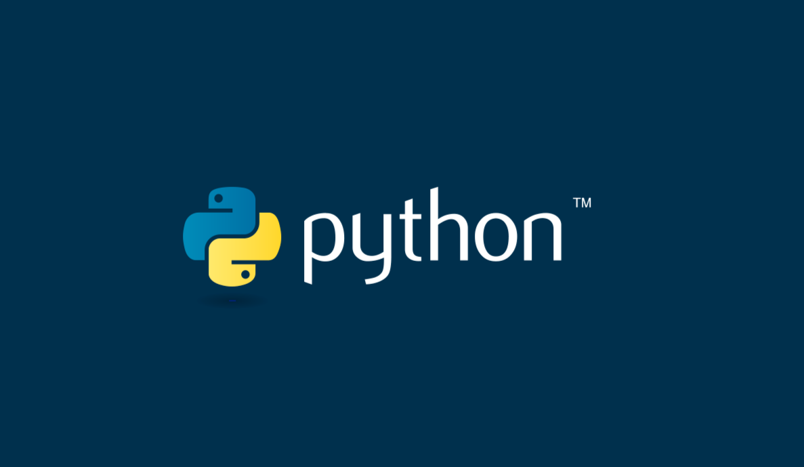
Repositório no Github com todos os projetos e simuladores desenvolvidos utilizando a linguagem Python.
Visualize aqui!Bacharelanda em Administração na Universidade Univem de Marília e término julho/2027.

Pós-graduação em Inteligência Artificial e Machine Learning - Faculdade Anhanguera de Marília concluído em 2026.
Tecnóloga em Análise e Desenvolvimento de Sistemas Faculdade Anhanguera de Marília e concluído em 2024.
Profissionalização em Business Inteligence pela FIAP e concluído em 2024.
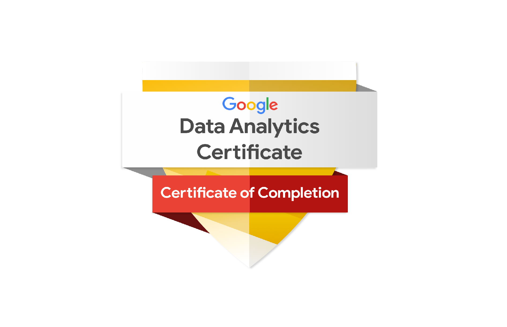
Analista de Dados pela Google em parceria com a plataforma Coursera e concluído em 2023.
Formação Yellow Belt - Lean Six Sigma pela Nestlé Biscoiteria ministrado pelo Master Black Belt Leandro Seccadio e concluído em 2023.
+15 outras certificações profissionalizantes pela Fundação Bradesco, Sebrae e Senac.
O jeito mais rápido de me contatar é por e-mail! ⬇️
ctt.amandaoliveira@gmail.com